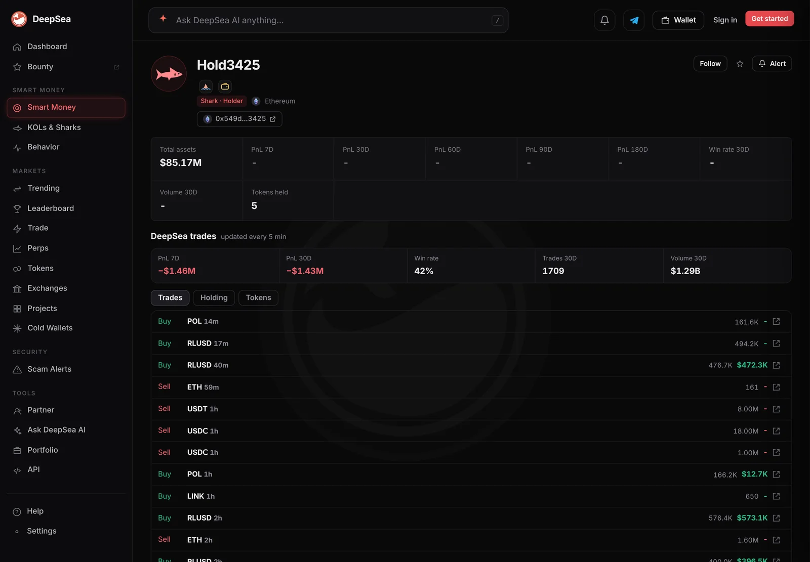

One shark took in $56.7 million of RLUSD in a day, then sent $32.8 million to Binance and Bybit
DeepSea's top RLUSD line, $54.13 million bought, comes almost entirely from one wallet. Blockscout shows it working as a pipe, with dollars arriving from Bullish, OKX, Bitstamp and unlabeled wallets and leaving for exchange deposit addresses.
Key points
- DeepSea shows 3 shark wallets bought $54.13 million and sold $35.55 million of RLUSD on Ethereum in the 24 hours to 6:34 a.m. ET on November 24, in 31 trades.
- One of them, the wallet ending in 3425, received 56.72 million RLUSD in 15 transfers from 7:01 a.m. ET Monday to 6:32 a.m. ET Tuesday, Blockscout shows, and sent out 38.34 million in 13.
- Of the outflow, 18.30 million RLUSD went to an address Blockscout labels a Bybit deposit address and 14.49 million to addresses labeled Binance deposit.
 What DeepSea's data shows
What DeepSea's data shows
DeepSea's 24-hour flow table, built at 6:34 a.m. ET on November 24, puts RLUSD on Ethereum among the biggest shark lines: $54.13 million bought and $35.55 million sold by 3 wallets in 31 trades. RLUSD is Ripple's dollar stablecoin.
The same table's wallet list points to one address. The wallet ending in 3425 shows $53.84 million in and $33.68 million out across 80 trades, close to the whole RLUSD line. DeepSea names it Hold3425.
Its latest logged move, at 6:32 a.m. ET, brought in 494,237 RLUSD.

Data: DeepSea (desea.io), checked November 24, 2026, 6:34 a.m. ET.
Where the RLUSD came from
Blockscout's RLUSD transfer list for the wallet shows 15 incoming transfers in the window, worth 56.72 million RLUSD. The largest group, 31.23 million in five transfers, came from one unlabeled address. A single transfer of 18 million arrived at 4:18 a.m. ET on November 24 from another unlabeled address.
Exchange-labeled addresses sent less: 2.71 million from a Bullish hot wallet in three transfers, 2.80 million from one Blockscout labels OKX 154, and 433,995 from Bitstamp 61.
Where it went
Thirteen transfers took 38.34 million RLUSD out. Six, 18.30 million in all, went to an address labeled a Bybit deposit address. Three, 14.49 million, went to addresses labeled Binance deposit, including 7.39 million at 5:49 p.m. ET Monday.
The other 5.56 million went to four other addresses. The wallet ended the window 18.38 million RLUSD richer on these transfers.
For scale, Etherscan shows 1.80 billion RLUSD on Ethereum and 13,093 holders, and CoinGecko puts RLUSD's total market value at $2.82 billion, priced at $1.00.
RLUSD out of wallet 3425, 7:01 a.m. ET November 23 to 6:32 a.m. ET November 24
million RLUSD
Source: Blockscout, labels as shown there

LC Insight analysis
This section is our reading of the facts above, not a statement of fact.
- We think this wallet behaves like a desk or market maker moving dollars between venues, not a trader buying a coin: RLUSD holds its $1.00 price, so 'bought' here means received.
- Sending $32.8 million of RLUSD to Binance and Bybit deposit addresses in a falling market suggests demand for RLUSD on those exchanges, but the chain does not show what it was used for once it arrived.
- One wallet driving nearly all of DeepSea's RLUSD line is a reminder that a big shark total can rest on a single address.
What's next
- Whether the 18.38 million RLUSD the wallet kept moves on to an exchange.
- Whether the unlabeled address that sent 31.23 million keeps feeding it.
- RLUSD's supply on Ethereum, now 1.80 billion.
Disclaimer. This article is based on public information and the sources listed below as of the update time shown. It is for information only and is not investment, legal or tax advice. Figures may change as companies and authorities publish new data.
Sources
- DeepSea, 24-hour shark flows by token and wallet (built November 24, 2026, 6:34 a.m. ET)
- DeepSea, wallet page ending in 3425 (read November 24, 2026)
- Blockscout, RLUSD transfers of the wallet ending in 3425 (read November 24, 2026, 6:50 a.m. ET)
- Etherscan, RLUSD token page (read November 24, 2026, 6:38 a.m. ET)
- CoinGecko, RLUSD price and market value (November 24, 2026, 6:45 a.m. ET)